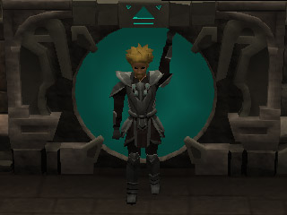

<?xml version="1.0" encoding="ISO-8859-1" ?>
<rss version="2.0" xmlns:media="http://search.yahoo.com/mrss/">
<channel>
<title>RuneScape Developers' Blogs [Project: Dungeoneering]</title>
<link>http://services/m=devblog/?project_id=35</link>
<description>
Welcome to the Developer Blogs. This section of the website contains articles delving behind the scenes here at Jagex. Each article will showcase a particular project related to RuneScape or the people whose work you don't get to see. Every one of them works hard towards making RuneScape the best it possibly can be, and to make Jagex a great place to work.
</description>
<image><link>http://services/m=devblog/</link><title>RuneScape Developer Blogs</title><url>http://site/img/devblog/feed_logo.png</url></image>
<language>en</language>
<item>
<title>Dungeoneering: Beyond the Release</title>
<link>http://services/m=devblog/view_post.ws?post_id=97</link>
<description><![CDATA[               
Since the release of Dungeoneering, the developers - Mods Chris L, Trick and Liono - have been hard at work not only on 'batch 2' (more rooms, more floors, more bosses), but also on a number of other improvements...
]]></description>
<author>Mod Liono</author>
<pubDate>Fri, 28 May 2010 15:22:46 BST</pubDate>
<category>construction</category>
<category>development</category>
<category>dungeon</category>
<category>farming</category>
<category>herblore</category>
<category>skill</category>
</item>
</channel>
</rss>
